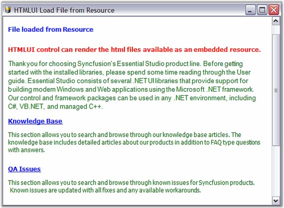

This sample demonstrates the implementation of Loading Embedded Resource Files by using HTMLUI.

Figure 23: HTMLUILoadFileFromResource Sample
By default, this sample can be found under the following location:
C:\Documents and Settings\username\My Documents\Syncfusion\EssentialStudio\Version Number\Windows\HTMLUI.Windows\ Samples\2.0\Loading HTML\HTMLUILoadFileFromResource